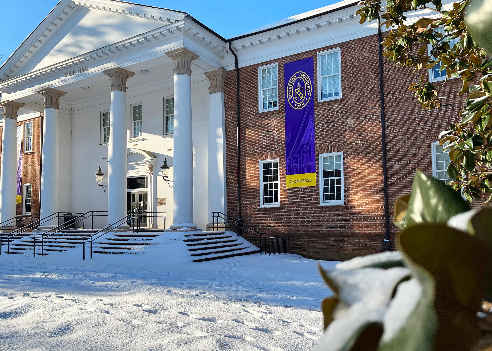

Headers
Headers break the document into sections.
Third-level header
Fourth-level header
Fifth-level header
Sixth-level header
Links
Hyperlinks provide a way to go to another page with a single click.
Links can also go to within a page to any tag with an id attribute, like this: go to the links.
Text tags
Common
The paragraph tag has been one of the most commonly used tags in HTML right from the beginning of the Web. There are also common tags for emphasized and strongly emphasized text. Note that the presentation of the <em> and <strong> tags, while usually reliable, is not guaranteed!
Less common
<blockquote>:
Some famous thing that some famous person said, with great and entirely unnecessary prolixity, showing off all the three-dollar words in his (or her) bloated vocabulary and boring everyone listening (or reading).
<sub> and <sup>:
210, ai
<br> and <pre>:
HTML generally collapses white space. Use <pre>
if you
must have
control.
Geeks only
<code> encloses computer code. <var> encloses variables, like this: count = count + 1
Lists
Unordered
- Items
- with
- no
- natural
- ordering
Ordered
- One
- These items have a natural ordering.
- Two
- √5 ≈ 2.23607
- e ≈ 2.71828
- √8 ≈ 2.82843
- Three
- Four
An outline is an example of a set of ordered lists, nested inside higher-level ordered lists. Outlines up to four levels deep can be produced in HTML using the type attribute on an <ol> tag.
- First top-level item
- First second-level item, inside item I
- First third-level item, inside item I.A
- First fourth-level item, inside item I.A.a.
- Second fourth-level item, inside item I.A.a.
- Second third-level item, inside item I.A
- First third-level item, inside item I.A
- Second second-level item, inside item I
- Third second-level item, inside item I
- First second-level item, inside item I
- Second top-level item
- First second-level item, inside item II
- Second second-level item, inside item II
- Third second-level item, inside item II
- First third-level item, inside item II.C
- First fourth-level item, inside item II.C.a.
- Second fourth-level item, inside item II.C.a.
- Second third-level item, inside item II.C
- First third-level item, inside item II.C
- Third top-level item
- First second-level item, inside item III
- Second second-level item, inside item III
- First third-level item, inside item III.B
- Second third-level item, inside item III.B
- First fourth-level item, inside item III.B.b.
- Second fourth-level item, inside item III.B.b.
- Third second-level item, inside item III
Definition (not common)
- Term
- A term is in item in a definition list.
- Definition
- A definition is the writer's hopeful attempt to make sense of the term.
Table
| Building | Room | Features | |
|---|---|---|---|
| Seats | Notes | ||
| Kuhn | 212 | 22 | Computer lab |
| 217 | 30 | Data-science classroom | |
| 203 | 70 | Lever Auditorium | |
| Phifer | 201 | 15 | |
| 211 | 30 | Lab | |
| Building | Room | Features | ||
|---|---|---|---|---|
| Picture | Name | Seats | Notes | |
 | Kuhn | 212 | 22 | Computer lab |
| 217 | 30 | Data-science classroom | ||
| 203 | 70 | Lever Auditorium | ||
| Phifer | 201 | 15 | ||
| 211 | 30 | Lab | ||
Image

4400-HP electric locomotive, built 1963. This was the last mainline electric freight locomotive built in the U.S. for a common-carrier American railroad.
Video
Image collection (flexbox)


Image collection (responsive, wrapping flexbox)

Image collection (responsive, flexible grid)
Image collection (fixed, 4-column grid)